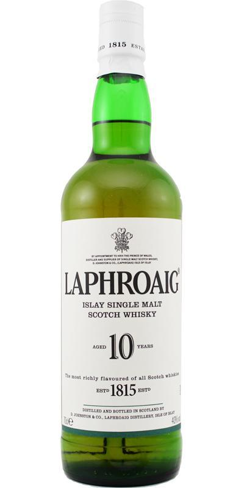
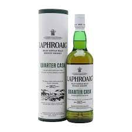
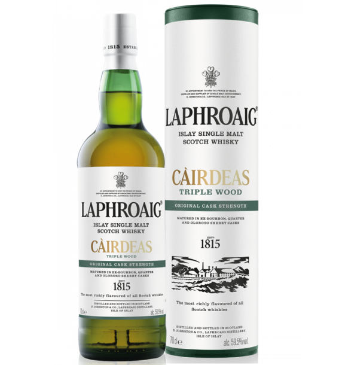

Laphroaig 10 Years Old
강렬한 피트 향과 스모키한 맛이 특징인 Laphroaig의 대표적인 제품입니다.
Laphroaig Quarter Cask
더 작은 오크통에서 숙성되어 부드럽고 강렬한 맛을 동시에 느낄 수 있습니다.
Laphroaig Triple Wood
세 가지 다른 오크통에서 숙성되어 복합적인 맛과 향을 자랑합니다.
강렬한 피트 향과 스모키한 맛이 특징인 Laphroaig의 대표적인 제품입니다.
더 작은 오크통에서 숙성되어 부드럽고 강렬한 맛을 동시에 느낄 수 있습니다.
세 가지 다른 오크통에서 숙성되어 복합적인 맛과 향을 자랑합니다.